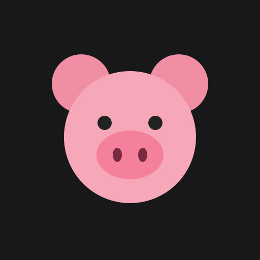

돼지손악기
iPhone/iPad: Safari 하단의 공유 버튼 → 홈 화면에 추가를 누르면 앱처럼 쓸 수 있습니다.
손동작으로 코드를 고르고, 멜로디는 직접 노래하세요. 브라우저에서 카메라 영상은 기기 밖으로 나가지 않습니다.
카메라로 손을 인식해 연주합니다
헤드폰 착용을 권장합니다 (스피커 소리가 마이크/카메라와 섞이지 않도록)
카메라 없이도 패드를 누르거나 키보드 1~7을 누르고 있으면 연주됩니다.
왼손 · 코드 선택
- 손가락 수 → I~V (검지부터 1~5개)
- 검지+새끼 🤘 → VI
- 엄지+검지+새끼 🤟 → VII
- 손 기울기 → 안쪽 메이저 / 바깥쪽 마이너
- 손이 하나만 보이면 그 손이 코드 손이 됩니다 (한 손 모드)
오른손 · 소리 만들기
- 손가락 1~4개 → 기본 / 1전위 / 7th / 도미넌트7·디미니시드7
- 엄지 펴기 → 한 옥타브 위
- 손 높이 → 볼륨 (위쪽이 크게)
- 손 기울기 → 필터 (밝기)
손은 화면에서 보이는 위치 기준으로 구분합니다(화면 왼쪽 = 왼손). 손바닥을 카메라에 향하고, 조명이 밝은 곳에서 사용하세요.